Nöjdhet, kostnader och intäkter
Inledning
Denna rapport undersöker kultursektorns utveckling i Uppsala län genom att analysera invånarnas nöjdhet, deltagande i kulturaktiviteter samt kommunernas ekonomiska satsningar på kulturverksamhet. Syftet är att ge en övergripande bild av det kulturella landskapet i länet och identifiera mönster och skillnader mellan kommunerna. Genom att kombinera data om nöjdhet, deltagande och ekonomi erbjuds en mångfacetterad förståelse av hur kulturen fungerar som samhällsresurs i Uppsala län.
Alla interaktiva grafer kan laddas ned genom att trycka på  . Då sparas just den bild som visas, med exempelvis den valda regionen. Genom att dubbelklicka på kommunnamn i grafens legend så zoomas den kommunen in för en mer detaljerad vy(flera kan väljas samtidigt).
. Då sparas just den bild som visas, med exempelvis den valda regionen. Genom att dubbelklicka på kommunnamn i grafens legend så zoomas den kommunen in för en mer detaljerad vy(flera kan väljas samtidigt).
Nöjdhet med kultur- och nöjesliv
Invånarnas upplevelse av det lokala kultur- och nöjeslivet är en central indikator för kulturpolitikens framgång och kultursektorns relevans. Detta avsnitt redovisar andelen invånare som har svarat ”Mycket bra” eller ”Ganska bra” på frågan ”Vad tycker du om det lokala kultur- och nöjeslivet i kommunen (t.ex. konstutställningar, teater, konserter etc.)?” i SCB:s medborgarundersökning. Svarsalternativen ”Vet inte” och ”Ingen åsikt” har exkluderats från beräkningarna.
Resultaten baseras på en urvalsundersökning och redovisas som punktskattningar. Detta innebär att de uppskattade andelarna är behäftade med statistisk osäkerhet och inte nödvändigtvis är fullt representativa för hela populationen i respektive kommun. Med hjälp av osäkerhetsintervall kring skattningarna kan det med hög sannolikhet antas att den sanna andelen ligger inom det redovisade intervallet.
Data är hämtat från Rådet för främjande av kommunala analyser (2025) som hänvisar till Statistiska centralbyrån (SCB) (2025a). För kommuner där uppgifter saknas för flera år redovisas resultaten endast för det år då data finns tillgänglig, i form av stapeldiagram i stället för tidsserier.
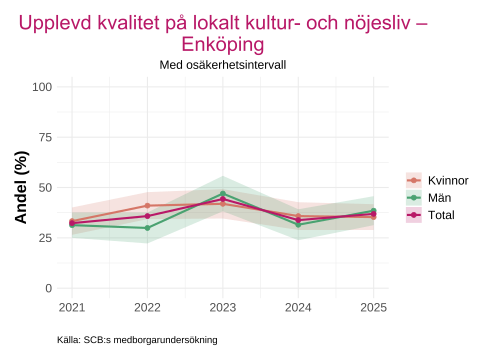
Ladda ner
{kind=link}
{kind=link}
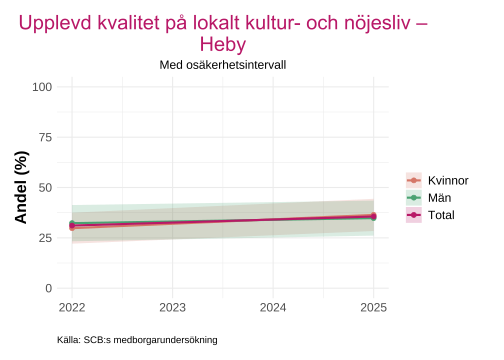
Ladda ner
{kind=link}
{kind=link}
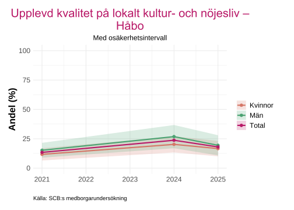
Ladda ner
{kind=link}
{kind=link}
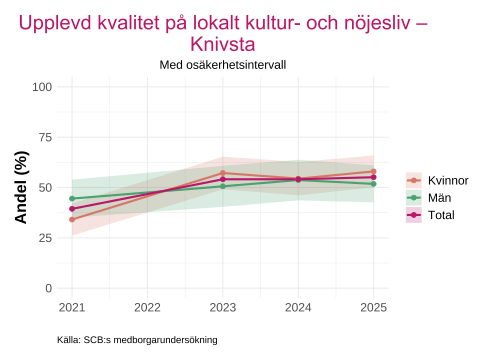
Ladda ner
{kind=link}
{kind=link}
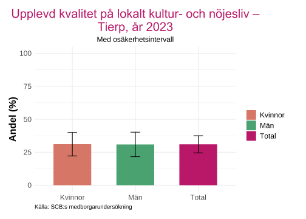
Ladda ner
{kind=link}
{kind=link}
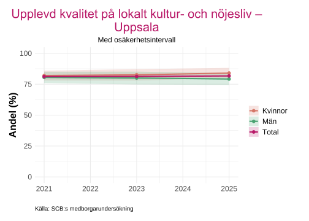
Ladda ner
{kind=link}
{kind=link}
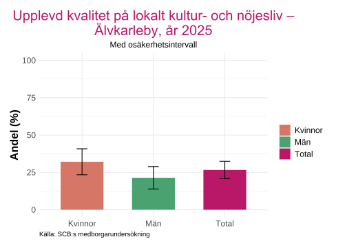
Ladda ner
{kind=link}
{kind=link}

Ladda ner
{kind=link}
I flera kommuner och år kan det vid en första anblick se ut som andelen skiljer sig mellan könen, men det är inte en statistiskt signifikant skillnad mellan könen i någon kommun. Detta framgår tydligt då osäkerhetsintervallen alltid överlappar inom varje år. Överlappande intervall innebär att de observerade skillnaderna kan förklaras av slumpmässig variation i urvalet snarare än av verkliga skillnader.
Uppsala kommun har högst andel av de svarande som svarat “Mycket bra” eller “Ganska bra” på över 75 %. Det syns också att osäkerhetsintervallen är mindre för Uppsala kommun än de övriga kommunerna i länet, vilket troligtvis beror på ett mycket större antal individer som svarat på undersökningen och/eller att bortfallet är lägre. Större urval ger mer precisa skattningar och smalare konfidensintervall, vilket gör resultaten mer tillförlitliga.
Lägst andel hittas i Håbo, där det högsta värdet för perioden är 25 %, vilket gäller män år 2024. För mindre kommuner kan begränsade resurser, färre invånare och större geografiska avstånd till kulturinstitutioner bidra till lägre nöjdhet.
Deltagande
Detta avsnitt undersöker det faktiska deltagandet i olika kulturaktiviteter. Deltagande i kultur redovisas som ett sammanvägt mått baserat på genomsnittligt deltagande i följande aktiviteter:
Deltagande i konstutställning och/eller museum
Teater eller bio
Sportevenemang
För varje aktivitet avser uppgifterna den genomsnittliga andelen av befolkningen i åldern 16–84 år som deltagit under perioden år \(T\), \(T-1\) och \(T-2\). Det innebär att varje värde representerar ett glidande medelvärde över tre år, vilket bidrar till att minska slumpmässiga variationer mellan enskilda år.
Data är hämtat från Rådet för främjande av kommunala analyser (2025) som hänvisar till Folkhälsomyndigheten (2025).
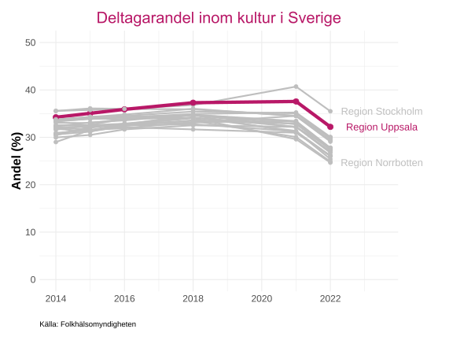
Ladda ner
{kind=link}
{kind=link}
Notera att y-axeln i grafen är begränsad till 50 procent, vilket kan ge intryck av att skillnaderna är större än de faktiskt är och framför allt att andelen är högre än den faktiskt är. Avgränsningen är gjord för att möjliggöra en närmare granskning av utvecklingen över tid och för att tydligare synliggöra de relativt små skillnaderna mellan regionerna.
De flesta regionerna uppvisar liknande deltagandenivåer, vilket tyder på en relativt jämn spridning av kulturdeltagande över landet. De två regionerna som sticker ut mest är Stockholm och Uppsala, som har en något högre genomsnittlig deltagarandel än övriga regioner.
Vid 2022 syns en tydlig minskning av andelen för samtliga regioner, och det är troligt att covid-19-pandemin ligger bakom denna nedgång. Nedstängningar, restriktioner och rädsla för smitta påverkade möjligheterna att delta i kulturaktiviteter dramatiskt under denna period. Intressant nog ser andelen år 2021 inte ut att vara lika påverkad av pandemin. Detta beror på att varje datapunkt baseras på ett glidande medelvärde av de två senaste år då mätdata finns tillgänglig. Därmed innehåller värdet för 2021 även observationer från perioden före pandemin, vilket dämpar pandemins genomslag i resultaten.
Elever i musik- eller kulturskola
Detta avsnitt redovisar andelen barn och unga som deltar i kommunal musik- eller kulturskoleverksamhet. Andelen beräknas som antalet unika individer inskrivna i musik- eller kulturskola dividerat med den totala befolkningen i motsvarande åldersgrupp. Redovisningen omfattar både åldersgruppen 6–19 år samt 6–15 år.
Av sekretesskäl har Statistiska centralbyrån avrundat de könsuppdelade uppgifterna om antal unika deltagare till närmaste femtal. Detta kan medföra mindre avvikelser, där summan av kvinnor och män inte alltid överensstämmer exakt med de totalt redovisade värdena.
Data är hämtat från Rådet för främjande av kommunala analyser (2025) som hänvisar till Statistiska centralbyrån (SCB) (2025c) och Kulturrådet (2025).
Antal unika individer totalt som går i musik- eller kulturskola, baserat på enkätfråga. Data är hämtat från Rådet för främjande av kommunala analyser (2025) som hänvisar till Kulturrådet (2025).
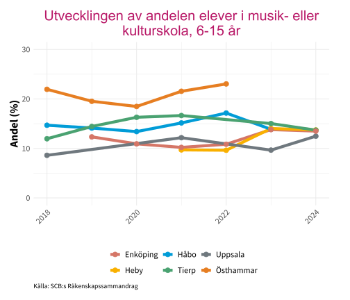
Ladda ner
{kind=link}
{kind=link}
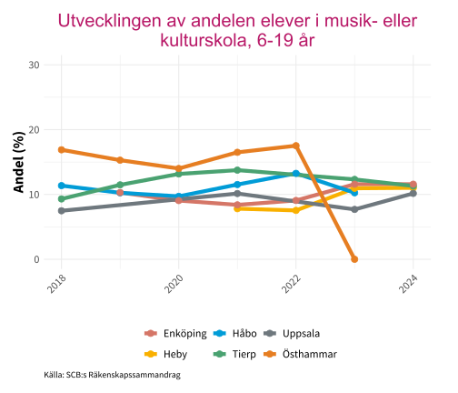
Ladda ner
{kind=link}
{kind=link}
| Kommun | 2019 | 2020 | 2021 | 2022 | 2023 | 2024 |
|---|---|---|---|---|---|---|
| Enköping | 909 | 765 | 770 | 855 | 1086 | 1113 |
| Heby | 127 | NA | 175 | 180 | 293 | NA |
| Håbo | 534 | 420 | 495 | 585 | 510 | NA |
| Knivsta | NA | NA | NA | NA | 450 | NA |
| Tierp | 389 | 445 | 505 | NA | 800 | 425 |
| Uppsala | 3687 | NA | 3975 | NA | 4625 | 5139 |
| Älvkarleby | 192 | NA | NA | NA | 197 | NA |
| Östhammar | 450 | 460 | 560 | 600 | 622 | NA |
| Källa: Kulturrådet | ||||||
Samtliga kommuner uppvisar en lägre andel elever i musik- eller kulturskola när de äldre åldrarna inkluderas. I Östhammar ses en minskning med runt 5 procentenheter för respektive år mellan åldersgrupperna 6–15 och 6–19. Detta mönster är väntat och speglar att deltagandet i kulturskolan tenderar att avta när eleverna når gymnasieåldern, då andra aktiviteter, studier och arbete konkurrerar om deras tid.
Av de kommuner som har data för år 2024 ligger andelarna mycket nära varandra, mellan 10 och 15 procent. Denna relativa homogenitet tyder på att kulturskolans räckvidd är förhållandevis jämn mellan kommunerna
Att Östhammar har en andel på 0 år 2023 för åldersgruppen 6-19 är troligtvis pga att data saknas och har blivit registrerad som 0 av kolada. Knivsta och Älvkarleby saknar data för åren som presenteras ovan och har därav exkluderas från figurerna.
Könsfördelning i kulturskola
Detta kapitel redovisar könsfördelningen bland elever i kulturskolan i åldersgruppen 6–19 år, uttryckt som andelen flickor av det totala antalet elever. Syftet är att belysa hur deltagandet i kulturskolans verksamhet fördelar sig mellan könen över tid och mellan kommuner.
Data är hämtat från Rådet för främjande av kommunala analyser (2025) som hänvisar till Kulturrådet (2025)
| Kommun | 2016 | 2017 | 2018 | 2019 | 2020 | 2021 | 2022 | 2023 | 2024 |
|---|---|---|---|---|---|---|---|---|---|
| Enköping | 65.89 | 65.59 | NA | 58.29 | 63.38 | 61.76 | 61.33 | 64.10 | 62.44 |
| Heby | 52.14 | 57.14 | NA | NA | NA | 65.71 | 66.67 | 66.00 | 70.59 |
| Håbo | 60.27 | 43.17 | 57.53 | 58.49 | 66.27 | 66.00 | 65.81 | 63.33 | NA |
| Knivsta | 65.90 | NA | NA | NA | NA | NA | NA | NA | NA |
| Tierp | 68.94 | 69.82 | 54.67 | 54.45 | 64.37 | 64.21 | NA | 67.06 | 66.67 |
| Uppsala | 56.93 | 57.10 | 54.89 | NA | NA | 56.41 | NA | 57.55 | 59.72 |
| Älvkarleby | 68.54 | 91.68 | NA | NA | NA | NA | NA | NA | NA |
| Östhammar | 73.31 | NA | 62.48 | 61.82 | 63.04 | 63.96 | 66.10 | NA | NA |
| Källa: Kulturrådet | |||||||||
Flickor utgör en tydlig majoritet av eleverna i kulturskolan. Endast vid ett tillfälle under hela perioden var pojkarna fler - i Håbo år 2017. I övrigt ligger andelen flickor över 50 procent i samtliga kommuner och år med tillgängliga data. För de kommuner som har aktuell data (de senaste två åren) ligger andelen flickor generellt högt. Uppsala kommun är den enda kommunen under 60 procent med 59,72 procent flickor senaste året.
Den högsta andelen under perioden finns i Älvkarleby år 2017 med 91,68 procent flickor, vilket också är det senaste året med data för kommunen. Året innan, 2016, var andelen 68,54 procent, alltså en väldigt stor förändring. värt att notera är att i mindre kommuner med färre elever kan små förändringar i absoluta tal ge stora utslag i procentandelar.
Data saknas för vissa kommuner under flera år i perioden, vilket försvårar jämförelser över tid.
Elevavgift
Detta kapitel behandlar den genomsnittliga elevavgiften inom musik- och kulturskolan. Måttet definieras som kulturskolans totala intäkter från avgifter (i räkenskapssammandragen benämnda taxor och avgifter) dividerat med antalet unika elever i åldersgruppen 6–19 år. Syftet är att ge en översiktlig bild av hur avgiftsnivåerna varierar över tid och mellan kommuner.
Data är hämtat från Rådet för främjande av kommunala analyser (2025) som hänvisar vidare till Statistiska centralbyrån (SCB) (2025b) och Kulturrådet (2025).
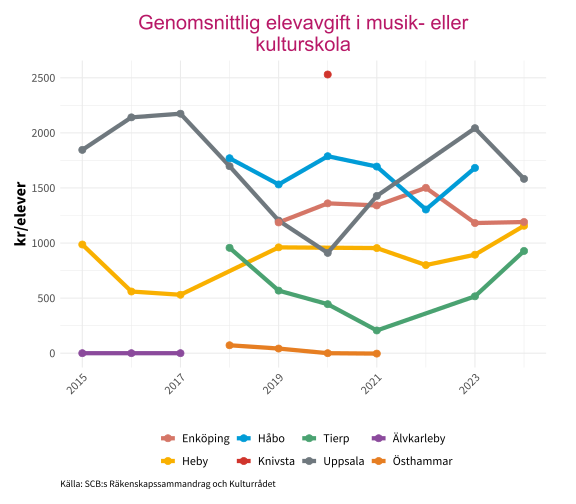
Ladda ner
{kind=link}
{kind=link}
Den genomsnittliga elevavgiften för musik- eller kulturskola skiljer sig tydligt mellan kommunerna i länet, där Älvkarleby och Östhammar har lägst värden och ligger under 100 kr/elev för åren de har data.
Högst avgift per elev hittas i Håbo, Knivsta och Uppsala kommun. Håbo och Uppsala kommun har en elevagift på över 1500 kr/elev för en stor del utav åren i perioden. Knivsta har endast data för ett utav åren och redovisar då en elevavgift på över 2500 kr/elev.
Värt att tänka på är att utbudet av vilka kurser som erbjuds och i vilken omfattning i respektive kommun kan spela stor roll för den genomsnittliga avgiften. Samma kurs i två olika kommuner kan ha samma avgift trots att genomsnittet skiljer sig åt.
Utbud i kulturskolan
Kulturskolan erbjuder barn och unga möjlighet att utvecklas inom olika kulturella och konstnärliga uttryck. I detta kapitel redovisas vilka ämneskurser som erbjuds i landets kulturskolor.
Elva ämnesområden undersöks: Musikal, Musik - ensemble/orkester/kör/musikgrupp, Dans, Teater/drama, Bild och form, Cirkus, Film/animation, Foto, Slöjd/hantverk, Skrivande/berättande samt Övriga ämnen.
I de flesta kommuner driver kommunen själv kulturskolan. I ett mindre antal kommuner finns även andra huvudmän eller enbart annan huvudman än kommunen.
Data är hämtat från Rådet för främjande av kommunala analyser (2025) som hänvisar till Kulturrådet (2025).
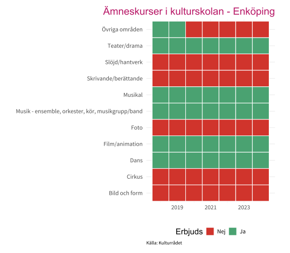
Ladda ner
{kind=link}
{kind=link}
I Enköping finns förekomsten av kulturskola i form av öppen verksamhet år 2024 .
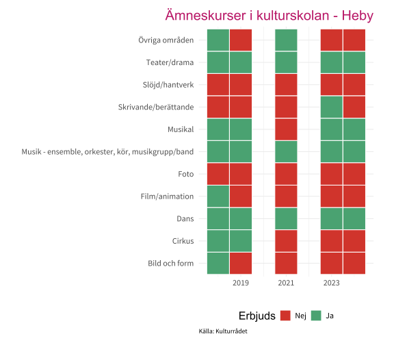
Ladda ner
{kind=link}
{kind=link}
I Heby finns inte förekomsten av kulturskola i form av öppen verksamhet år 2024 .

Ladda ner
{kind=link}
I Håbo finns förekomsten av kulturskola i form av öppen verksamhet år 2023 .
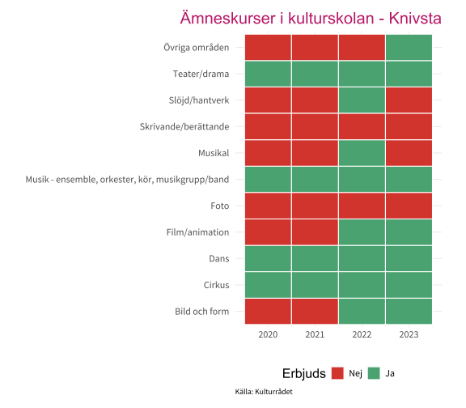
Ladda ner
{kind=link}
{kind=link}
I Knivsta finns förekomsten av kulturskola i form av öppen verksamhet år 2023 .
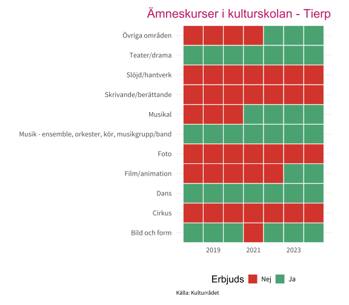
Ladda ner
{kind=link}
{kind=link}
I Tierp finns förekomsten av kulturskola i form av öppen verksamhet år 2024 .

Ladda ner
{kind=link}
I Uppsala finns förekomsten av kulturskola i form av öppen verksamhet år 2024 .
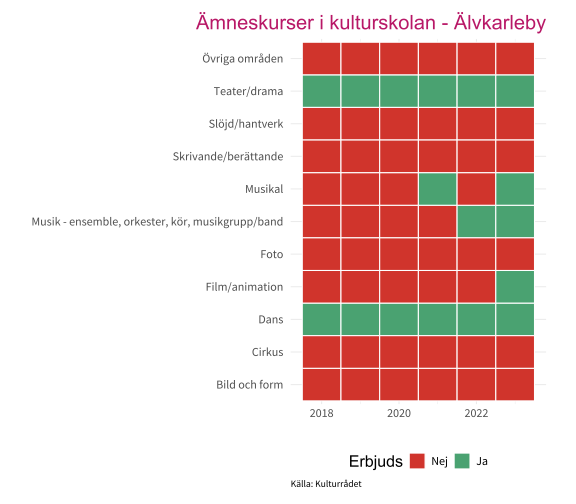
Ladda ner
{kind=link}
{kind=link}
I Älvkarleby finns förekomsten av kulturskola i form av öppen verksamhet år 2023 .
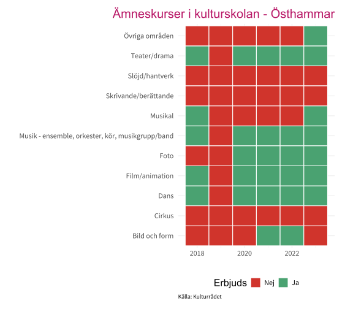
Ladda ner
{kind=link}
{kind=link}
I Östhammar finns inte förekomsten av kulturskola i form av öppen verksamhet år 2023 .
Ingen av kommunerna i länet inkluderar alla undersökta kategorier i sitt utbud. Flest ämneskurser har Knivsta, Tierp och Östhammar med sju ämnen vardera år 2023.
Knivsta och Tierp har kraftigt utökat sitt utbud under perioden. Båda kommunerna erbjöd endast fyra ämnesområden år 2020, men har alltså nästan fördubblat antalet kurser på tre år.
Slöjd/hantverk är nästan helt frånvarande i länet. Endast Knivsta erbjöd detta ämne, och då enbart år 2022. Foto finns bara i Östhammar, ingen annan kommun i länet har detta ämne.
Teater/drama, musik – ensemble/orkester/kör/musikgrupp och dans erbjuds i samtliga kommuner, vilket gör dessa till de mest spridda ämnena i länet.
Biosalonger
Denna del redovisar statistik över biografverksamhet och biobesök på länsnivå. Underlaget baseras på data från Kulturanalys (u.å.) och omfattar bland annat besöksnivåer, antal salonger och visningar i relation till befolkningen. För mer detaljerade analyser, metodbeskrivningar och nationella jämförelser hänvisas till Kulturanalys tematiska genomgång av filmområdet: Kulturanalys.

Ladda ner
{kind=link}
Uppsala län uppvisar relativt höga nivåer i flera centrala kategorier. Länet ligger bland de främsta i landet när det gäller besök per invånare, antal salonger per miljon invånare samt antal visningar per tusen invånare. Detta indikerar en hög tillgänglighet till biografutbud i kombination med ett aktivt publikdeltagande.
När det gäller antal biografer per miljon invånare ligger Uppsala län däremot nära riksgenomsnittet, vilket tyder på att länets starka resultat i flera kategorier snarare drivs av användning och utbud än av ett exceptionellt stort antal biografanläggningar. Gotlands län har de högsta värdena i samtliga kategorier utom besök per invånare, där Stockholms län istället toppar med ett värde på 1,3.
Utveckling jämfört med riket
Tabellerna nedan visar utvecklingen av antal biobesök per invånare respektive antal visningar per tusen invånare, för Uppsala län och riket som helhet.
| Region | 2023 | 2024 |
|---|---|---|
| Riket | 1.1 | 1.0 |
| Uppsala län | 1.1 | 1.1 |
| Källa: Kulturanalys | ||
| Region | 2023 | 2024 |
|---|---|---|
| Riket | 56.6 | 54.2 |
| Uppsala län | 81.4 | 78.2 |
| Källa: Kulturanalys | ||
På riksnivå har antalet biobesök per invånare minskat fram till 2024. För Uppsala län syns ingen motsvarande nedgång, vilket innebär att länet utvecklas något starkare än riket i detta avseende. Skillnaden är dock marginell, och eftersom tidsserien endast omfattar två år går det inte att dra några säkra slutsatser om långsiktiga trender.
När det gäller antalet visningar per tusen invånare ligger Uppsala län tydligt över rikssnittet, vilket förstärker bilden av ett relativt aktivt biografutbud. Samtidigt uppvisar både riket och Uppsala län en nedgång under 2024 jämfört med 2023, vilket kan indikera en generell avmattning i visningsvolymer under perioden.
Antal biografer per kommun
Tabellen nedan redovisar antalet biografer per kommun i Uppsala län.
| Kommun | 2023 | 2024 |
|---|---|---|
| Enköping | 1 | 1 |
| Heby | 3 | 3 |
| Håbo | 1 | 1 |
| Knivsta | 1 | 1 |
| Tierp | 1 | 2 |
| Uppsala | 6 | 8 |
| Älvkarleby | 1 | 1 |
| Östhammar | 2 | 2 |
| Källa: Kulturanalys | ||
Mellan 2023 och 2024 har Tierps och Uppsala kommun ökat sitt antal biografer, medan övriga kommuner uppvisar oförändrade nivåer under perioden.
Flest biografer återfinns i Uppsala kommun, med totalt 8 stycken år 2024. Därefter följer Heby med 3 biografer, samt Tierp och Östhammar med 2 biografer vardera.
Fritidskort
Fritidskortet är en statlig satsning som syftar till att öka barns och ungas möjlighet att delta i fritidsaktiviteter inom idrott, kultur och andra föreningsaktiviteter. Kortet fungerar som ett digitalt stöd som vårdnadshavare kan använda för att betala avgifter till aktiviteter för barn mellan cirka 7 och 16 år. Syftet är att stärka deltagande oberoende av familjens ekonomiska förutsättningar och att främja en aktiv fritid för alla barn (”Om Fritidskortet” (u.å.); ”Fritidskortet” (u.å.)).
Data om Fritidskortet är hämtad från ”Så har Fritidskortet använts 2025” (u.å.) och baseras på registreringar av beviljade och använda kort. Detta avsnitt redovisar antal beviljade kort, antal använda kort samt andel använda kort av de beviljade.
Medianen visar det värde som ligger i mitten när alla kommuner rangordnas efter antal kort eller andel använda kort. Fördelningen mellan kommuner visas också med nedre och övre kvartil, vilket ger en bild av variationen mellan kommuner. Eftersom varje kommun räknas lika mycket, påverkas resultatet inte av hur många barn som bor i kommunen. Det betyder att små och stora kommuner väger lika i statistiken.

Ladda ner
{kind=link}

Ladda ner
{kind=link}

Ladda ner
{kind=link}
Både Enköping och Uppsala kommun tillhör den fjärdedel av kommuner i landet som har högst antal beviljade respektive använda fritidskort. Det innebär att dessa kommuner ligger över den övre kvartilen i jämförelsen med övriga kommuner i Sverige.
När analysen i stället utgår från andelen använda fritidskort i förhållande till antalet beviljade förändras bilden i länet. Knivsta och Östhammar tillhör då den fjärdedel av kommuner i landet som har högst andel använda kort. Även Heby ligger över riksmedianen, vilket innebär att en större andel av de beviljade korten används jämfört med hälften av landets kommuner.
Håbo och Tierp har den lägsta andelen använda kort i länet. Båda kommunerna tillhör den fjärdedel av kommuner i landet som har lägst andel använda fritidskort i förhållande till antalet beviljade.
Föreningar
Figur 5 baseras på data från ”Första hösten med fritidskortet – så har det gått” (u.å.) och visar hur många fritidskort som laddats ned per ansluten förening i Uppsala län. För att ge ett nationellt sammanhang jämförs länet mot riksfördelningens median samt nedre och övre kvartil, beräknade samtliga län i Sverige.

Ladda ner
{kind=link}
Antal nedladdade fritidskort i Uppsala län 14205 och totalt antal kopplade föreningar år 2025 är 176 stycken.
Uppsala läns kvot placerar länet i den övre kvartilen, bland de 25 procent av länen med flest nedladdningar i förhållande till antalet anslutna föreningar. Hälften av alla landets län hade en kvot på mellan 40 och 65 fritidskort per förening, vilket gör Uppsala läns nivå om cirka 80 påtagligt högre än riksmedianen.
Bibliotek
Kapitlet beskriver omfattningen och användningen av offentligt finansierade bibliotek. Uppgifterna ger en översikt av verksamheten och hur den har utvecklats över tid. Uppgifterna samlas in och publiceras av Kungliga biblioteket (2025) inom ramen för den officiella biblioteksstatistiken..
- Utlån av fysiska böcker:
- Totalt antal registrerade lån av tryckta böcker under året, inklusive omlån. Fjärrlån och interna överföringar mellan bibliotek räknas inte in. Om två kommuner delar bokbuss bör antalet lån på bussen delas mellan kommunerna i förhållande till hur stor procentuell andel av bokbusshållplatserna som ligger i respektive kommun. Lån som redovisats under ”övriga utlåningsställen” ingår även i denna fråga.”
Bibliotekstyper
- Skolbibliotek
- Friskolebibliotek
- Gymnasiebibliotek
- Specialbibliotek
- Folkbibliotek
- Universitetsbibliotek
- Friskolegymnasiebibliotek
- Sjukhusbibliotek
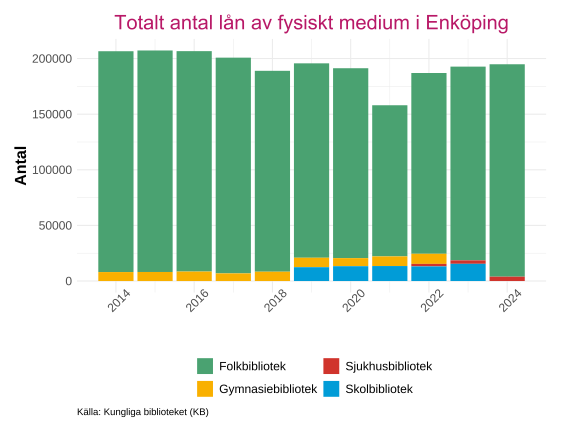
Ladda ner
{kind=link}
{kind=link}
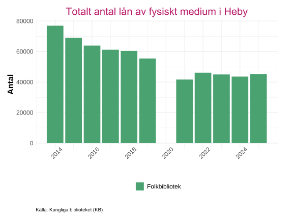
Ladda ner
{kind=link}
{kind=link}
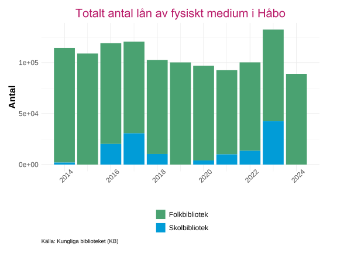
Ladda ner
{kind=link}
{kind=link}
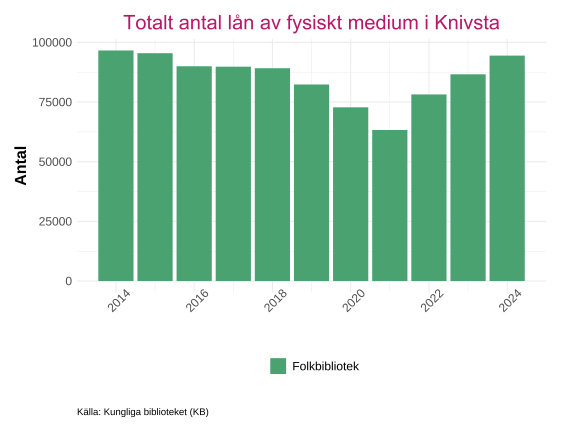
Ladda ner
{kind=link}
{kind=link}
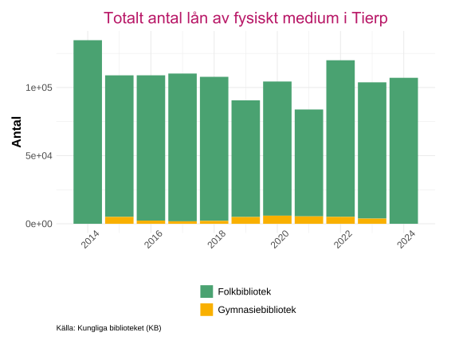
Ladda ner
{kind=link}
{kind=link}
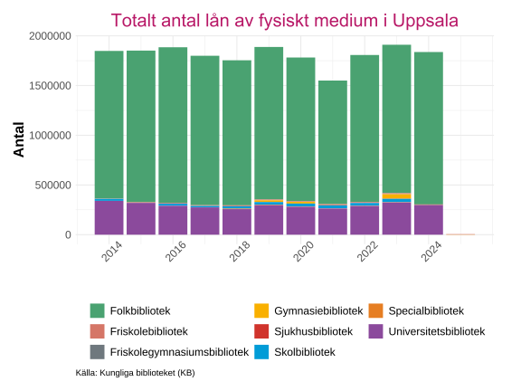
Ladda ner
{kind=link}
{kind=link}
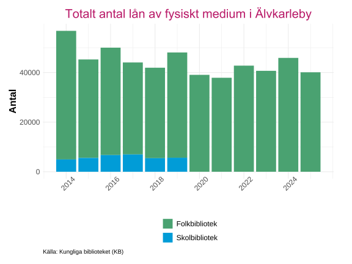
Ladda ner
{kind=link}
{kind=link}
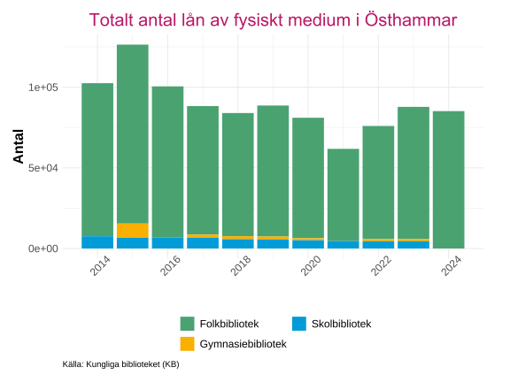
Ladda ner
{kind=link}
{kind=link}
Folkbiblioteken dominerar utlåningen av fysiska medier i samtliga kommuner i länet.
Uppsala kommun utgör dock ett delvis avvikande fall. Där är universitetsbibliotekens andel av de fysiska lånen större än både skol- och gymnasiebibliotekens, något som speglar Uppsalas karaktär som universitetsstad med en omfattande studentpopulation.
Folkbibliotek
Detta avsnitt beskriver statistiken för folkbiblioteken. Folkbiblioteken är den bibliotekstyp som når flest invånare och utgör en central del av kommunernas kultur- och informationsverksamhet.
- Fysiska besök:
- Antal besök vid bemannade bibliotek och bokbussar under året. Uppgifterna baseras på automatiska räknare eller beräknas enligt fastställd mätmetod för helår.
- Aktiva låntagare:
- Antal registrerade användare (personer och institutioner) som har gjort minst ett lån under året.
Data är hämtat från Kungliga biblioteket (2025).

Ladda ner
{kind=link}

Ladda ner
{kind=link}

Ladda ner
{kind=link}

Ladda ner
{kind=link}

Ladda ner
{kind=link}

Ladda ner
{kind=link}

Ladda ner
{kind=link}

Ladda ner
{kind=link}
De flesta folkbibliotek i länet uppvisar en tydlig nedgång i både fysiska besök, aktiva låntagare och antal utlån av fysiska böcker under covid-pandemins första år, vilket speglar de restriktioner och stängningar som påverkade kultursektorn under perioden.
Kulturhuset Möbelns bibliotek sticker ut genom att redan år 2019, redovisa sitt lägsta antal fysiska besök och aktiva låntagare. Detta mönster är unikt bland länets folkbibliotek och tyder på att biblioteket hade strukturella utmaningar redan innan pandemin slog till, snarare än att nedgången enbart kan förklaras av covid-19.
Mot slutet av perioden syns däremot en anmärkningsvärd vändning för just Kulturhuset Möbelns bibliotek: antalet aktiva låntagare når sin högsta nivå under hela den studerade perioden. Samma positiva utveckling gäller för Älvkarleby folkbibliotek, som också når rekordnivåer i antalet aktiva låntagare det senaste mätåret.
För Älvkarlebys del uppstår dock en paradox, trots de rekordmånga aktiva låntagarna registreras samtidigt bibliotekets lägsta antal fysiska besök under samma år. Detta kan tyda på en förändrad användning av bibliotekstjänsterna, där låntagare i högre utsträckning nyttjar digitala tjänster, e-lån eller andra distansbaserade erbjudanden snarare än att besöka biblioteket fysiskt.
Vad ska vara med
Hur bidrag förändras?
Kulturanalys Som? institutet
företag: Som jobbar inom kultur etc Karta?
Fysiska lokaler kartläggning
-Kulturvanor i länet (Svårfångad sominstitutet?)
-KKB SNI och SSYK. Vilka typer av företag finns det, omsättning, storlek, vilka yrken finns representerade i vilken omfattning. Check!
-Kulturskolor, vilka kommuner har vad, vilket deltagande är det (% av barn i kommun). Check!
-Investerad krona i kultur per invånare. Var investerar kommunerna sina “kulturpengar”? Check!
-Fritidskortets användning. Antal sökta kort samt föreningar (idrott och kultur) i länet, gärna på kommunnivå. CHECK?
-Studieförbundens verksamhet i kommunerna. CHECK?
-Kulturinstitutionerna inom kultursamverkansmodellen. Kanske bidragsnivå alt. antal besökare per år. Säger något om scenkonsten, arkiven och museerna i länet. CHECK?
-Utlån vid biblioteken
Exempel på källor SCB, Kolada, sominstitutet, e-hälsomyndigheten, Kulturdatabasen, Kulturanalys och Kulturrådet.
Utbud och deltagare - Organisationer - Ekonomi ?
Källor
Folkhälsomyndigheten. 2025. ”Folkhälsomyndigheten – nationell kunskapsmyndighet för folkhälsa”. https://www.folkhalsomyndigheten.se/.
”Fritidskortet”. u.å. Fritidskortet. https://fritidskortet.se/.
”Första hösten med fritidskortet – så har det gått”. u.å. Regeringen. https://www.regeringen.se/pressmeddelanden/2025/12/forsta-hosten-med-fritidskortet--sa-har-det-gatt/.
Kulturanalys. u.å. ”Kulturanalys – myndigheten för kulturpolitisk analys”. https://kulturanalys.se/.
Kulturrådet. 2025. ”Kulturrådet – Statens stöd till kultur”. https://www.kulturradet.se/.
Kungliga biblioteket. 2025. ”Bibstat – Biblioteksstatistik för Sverige”. https://bibstat.kb.se/.
”Om Fritidskortet”. u.å. Fritidskortet. https://fritidskortet.se/om-fritidskortet.
Rådet för främjande av kommunala analyser. 2025. ”Kolada – Jämför och analysera nyckeltal i kommuner och regioner”. https://www.kolada.se/.
Statistiska centralbyrån (SCB). 2025a. ”Medborgarundersökningen – regional statistikprodukt”. https://www.scb.se/vara-tjanster/bestall-data-och-statistik/regionala-statistikprodukter/medborgarundersokningen/.
———. 2025b. ”Räkenskapssammandrag för kommuner och regioner”. https://www.scb.se/hitta-statistik/statistik-efter-amne/offentlig-ekonomi/finanser-for-den-kommunala-sektorn/rakenskapssammandrag-for-kommuner-och-regioner/.
———. 2025c. ”Statistikdatabasen”. https://www.statistikdatabasen.scb.se/pxweb/sv/ssd/.
”Så har Fritidskortet använts 2025”. u.å. E‑hälsomyndigheten. https://www.ehalsomyndigheten.se/om-ehalsomyndigheten/aktuellt/nyheter/2025/sa-har-fritidskortet-anvants-2025.